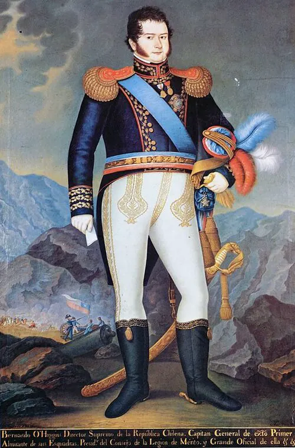

Abdicación de O'Higgins

El gobierno de Bernardo O'Higgins (1817–1823) consolidó la Independencia, organizó la escuadra y la expedición libertadora del Perú, y creó instituciones como la Escuela Militar y el Cementerio General. Pero su estilo fue autoritario: la Constitución de 1818 le dio amplios poderes y la de 1822 buscaba prolongarlos. Se le enfrentaron sectores de la aristocracia, molestos por la supresión de los títulos de nobleza y el intento de abolir los mayorazgos, parte del clero y las provincias, que reclamaban más participación. La crisis económica, la influencia de su ministro José Antonio Rodríguez Aldea y el recuerdo de la muerte de los hermanos Carrera y de Manuel Rodríguez aumentaron la oposición.
A fines de 1822 se sublevaron Concepción, al mando del intendente Ramón Freire, y Coquimbo. El 28 de enero de 1823, en un cabildo abierto en Santiago, O'Higgins aceptó renunciar para evitar una guerra civil; según la tradición, se descubrió el pecho y se ofreció a responder por sus actos. Poco después partió al Perú, donde murió en 1842. Su salida cerró el ciclo de la Independencia y dio paso a la Organización de la República.
Versión para niños
Bernardo O'Higgins gobernó Chile durante seis años como Director Supremo. Organizó la escuadra y fundó la Escuela Militar, pero también tomó decisiones que molestaron a mucha gente. A fines de 1822, algunas provincias se levantaron contra él, encabezadas por Ramón Freire. El 28 de enero de 1823, para evitar una guerra entre chilenos, O'Higgins renunció a su cargo ante los vecinos de Santiago. Después se fue a vivir al Perú.
Para maestros
Nivel sugerido: 6° básico
Objetivo: Evaluar el gobierno de O'Higgins considerando tanto sus logros como las críticas que recibió, y explicar las causas de su abdicación.
Preguntas para la clase:
- ¿Qué logros y qué problemas tuvo el gobierno de O'Higgins?
- ¿Por qué crees que O'Higgins prefirió renunciar en lugar de enfrentar a sus opositores?
- ¿Por qué es importante que los gobernantes rindan cuentas de sus actos?
Actividad (20–30 min): En parejas, los estudiantes completan una tabla de dos columnas con logros y críticas del gobierno de O'Higgins, a partir de textos breves entregados por el docente. Cada pareja escribe un juicio final argumentado de cinco líneas.
Fuentes sugeridas: Memoria Chilena; Museo Histórico Nacional; Biblioteca Nacional Digital; Biblioteca del Congreso Nacional (BCN).
Objetivos de Aprendizaje (Currículum Nacional)
- 6° básico · HI06 OA 03 Describir algunos hitos y procesos de la organización de la república … los desafíos que implicó organizar en Chile una nueva forma de gobierno
- 8° básico · HI08 OA 19 Evaluar las principales transformaciones y desafíos que generó la independencia de Chile, como la conformación de un orden republicano
- 1° medio · HI1M OA 08 Analizar el periodo de formación de la República de Chile como un proceso que implicó el enfrentamiento de distintas visiones
Personajes
Revisión humana pendiente. Cómo se revisa · Reportar un error
Cómo citar: Historia de Chile. (2026). Abdicación de O'Higgins. En Historia de Chile: atlas y línea de tiempo. https://moises-salgado.github.io/historia-de-chile/momento/abdicacion-de-o-higgins.html